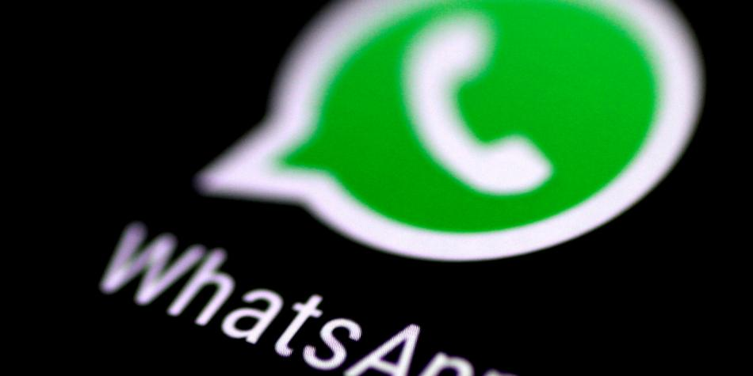

Desarrolladores y diseñadores aseguran que la capacidad de influencia en la red es desproporcionada
La persuasión viven en internet. Bien sea de forma directa como un llamado a la acción claro, como un
'compra ya', o con sugerencias repentinas de productos que usted podría estar interesado en comprar.
Diariamente, navegar en internet se convierte en una carrera de obstáculos para lograr
hacer lo que originalemente quería, evitando contenidos y servicios que compiten por su atención.
Distracciones y publicaciones engañosas también buscan captar la atención de los usuarios y en medio del riesgo
del surgimiento de nuevas tácticas de estafa y el aumento de la ciberdependencia,
algunos exponentes de la comunidad técnica como diseñadores y programadores buscan adoptar un estándar ético.
En 1996, el teórico estadounidense B.J. Fogg, investigador de la Universidad de Stanford, habló sobre la capacidad
de las tecnologías digitales para influir en sus usuarios. "No podemos hacer nada, queramos o no, sin estar expuestos
a la tecnología de la persuasión", escribió en 2010 el académico.
El servicio de mensajería puso en jaque a las versiones modificadas que permiten opciones "extra".

La red de mensajería instantánea WhatsApp anunció que suspenderá temporalmente las cuentas de otras versiones de la aplicación como ‘WhatsApp Plus’ y ‘GB WhatsApp’, que ofrecen características especiales y mejoras que, según la compañía, “violan las condiciones del servicio”.
“Si recibiste un mensaje dentro de la aplicación notificando que tu cuenta se encuentra ‘suspendida temporalmente’ significa que probablemente estás usando una versión de WhatsApp no autorizada en lugar de la aplicación oficial de WhatsApp. Si es así, debes descargar la aplicación oficial para continuar usando WhatsApp”, afirmó la compañía.
La piratería en las apps llegó desde el antiguo MSN, a quien también le crearon una versión modificada que permitía enviar zumbidos muy seguidos y cambiar el avatar de forma automática, entre otras funciones.
Con las características exclusivas de ‘WhatsApp Plus’ y ‘GB WhatsApp’ los usuarios podían personalizar toda la interfaz, congelar la hora de conexión, ocultar los ‘chulos azules’ y el ‘escribiendo…’ para determinados contactos o grupos, e incluso, aumentar el tamaño de archivos multimedia para enviar.
Si usted es usuario de estas aplicaciones no oficiales y se queda sin servicio, debe guardar su historial de chats antes de instalar la versión original, siga estos pasos: